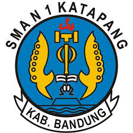

Education

Institut Teknologi Harapan Bangsa (ITHB)
Bachelor of Accounting | 2024 - PresentCurrently pursuing a Bachelor’s degree in Accounting with a strong focus on auditing, corporate finance, and financial analysis while actively participating in academic and organizational activities.

Senior High School
Social Science Major |2020 - 2024Completed secondary education with a concentration in economics and business studies, building foundational knowledge in accounting principles and analytical thinking.